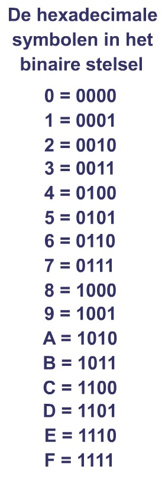

hier komt de uitleg over het binaire stelsel
Oké, laten we het hebben over het binaire stelsel, ook wel bekend als het tweetallige stelsel. Dit is de basis van alle digitale technologieën en computers!
Het binaire stelsel is eigenlijk een manier om getallen te schrijven met alleen twee cijfers: 0 en 1. Dit klinkt simpel, maar het is super krachtig omdat alles in computers uiteindelijk in nullen en enen wordt opgeslagen en verwerkt.
In het dagelijks leven gebruiken we het decimale stelsel, dat is met tien cijfers (0 t/m 9). In het binaire stelsel werkt het een beetje anders. Waar je in het decimale stelsel de cijfers steeds met 10 vermenigvuldigt (1, 10, 100, 1000, enz.), doe je dat in het binaire stelsel met 2 (1, 2, 4, 8, 16, enz.).
Laten we een simpel voorbeeld nemen. In het decimale stelsel is het getal 5 gewoon 5, maar in het binaire stelsel wordt dat 101. Hoe werkt dat? Het eerste cijfer staat voor 2^0 (dat is 1), het tweede voor 2^1 (dat is 2), en het derde voor 2^2 (dat is 4). Tel die bij elkaar op (1 + 4 = 5) en je hebt 5 in het decimale stelsel!
Nu denk je misschien, waarom is dit belangrijk? Nou, computers begrijpen alleen maar nullen en enen. Dus als jij bijvoorbeeld een foto uploadt, worden alle kleuren van die foto omgezet in binaire getallen voordat ze op de computer worden opgeslagen. En als je een app opent, worden de instructies voor die app ook in binaire code uitgevoerd.
Het binaire stelsel is dus echt de taal van computers. Zonder dit stelsel zouden onze moderne technologieën, zoals smartphones, laptops en zelfs het internet, niet kunnen bestaan. Dus ook al lijkt het misschien ingewikkeld, het is eigenlijk best cool en super belangrijk om te begrijpen hoe onze digitale wereld werkt!
